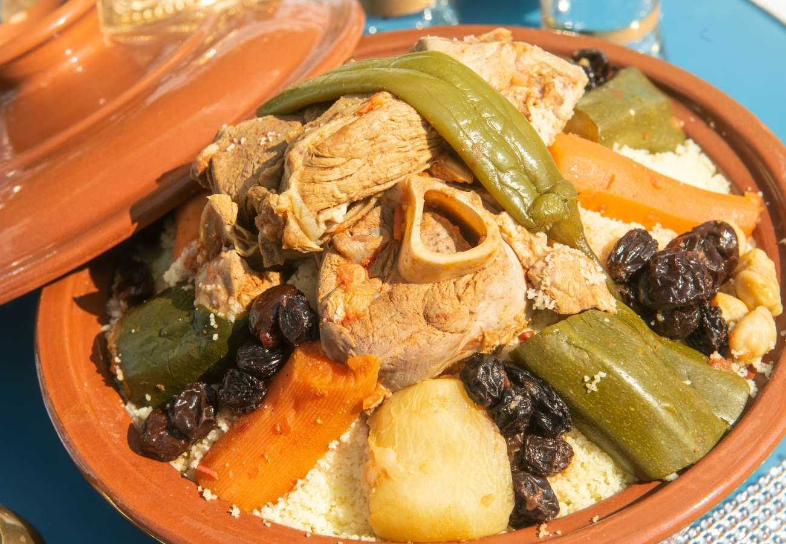
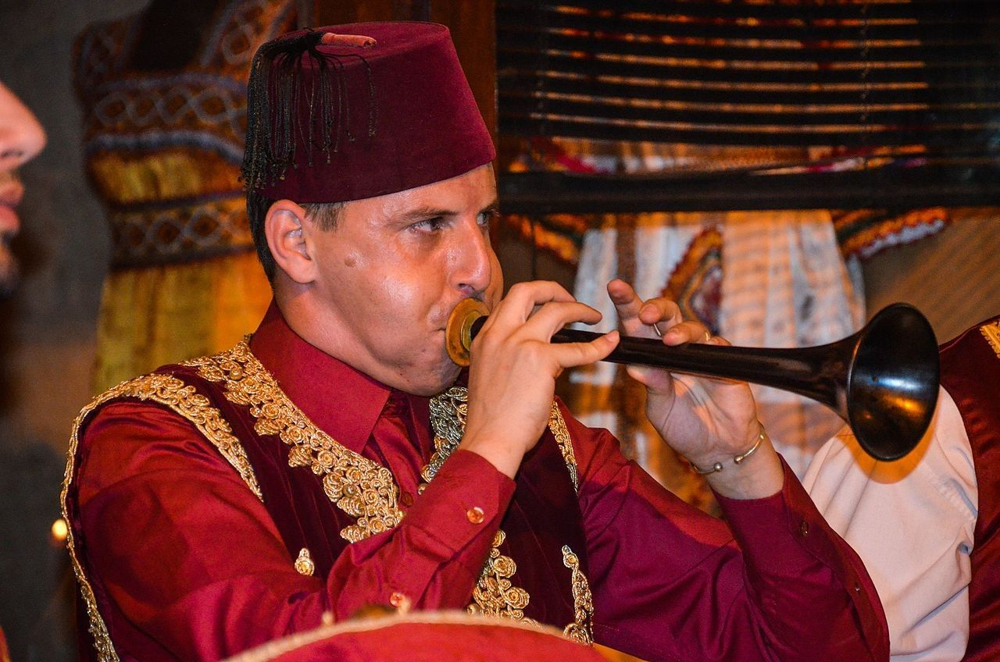
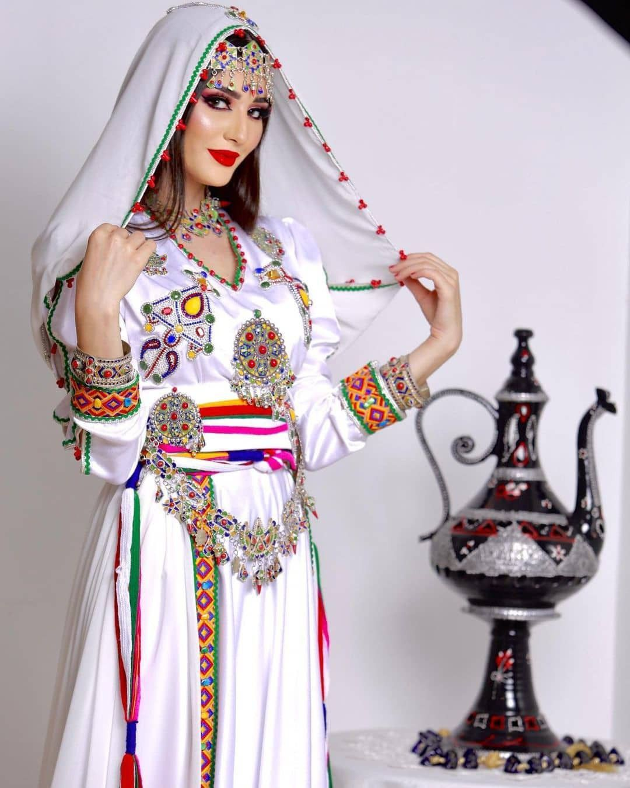

Food
Algerian cuisine is a mix of North African, Mediterranean, and Arab flavors. It includes couscous, chorba, and various pastries.
- Couscous
- Chorba (soup)
- Makroud (pastry)

Music
Algeria is known for its rich musical traditions like Raï, Chaabi, and Andalusian music. These styles reflect its diverse history.
- Raï from Oran
- Chaabi in Algiers
- Traditional Berber rhythms

Clothing
Traditional clothing varies by region. In general, people wear flowing garments like the Gandoura, Karakou, and Haik.
| Outfit | Region |
|---|---|
| Karakou | Algiers |
| Chedda | Tlemcen |
| Haik | National |